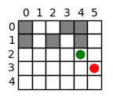

import numpy as np
import matplotlib.pyplot as plt
WALL = "#"
EMPTY = "."
figure_size = 1.5
def generate_map(width, height, seed):
np.random.seed(seed)
m = np.random.choice([WALL, EMPTY], size=(height, width))
# scan all 2x2 blocks and remove walls that are not needed
for i in range(height - 1):
for j in range(width - 1):
block = m[i : i + 2, j : j + 2]
if np.sum(block == WALL) == 4:
# randomly remove one wall
block[np.random.randint(2), np.random.randint(2)] = EMPTY
# run union-find to make sure the map is connected
parent = np.arange(width * height)
def find(x):
while parent[x] != x:
parent[x] = parent[parent[x]]
x = parent[x]
return parent[x]
def union(x, y):
parent[find(x)] = find(y)
for i in range(height):
for j in range(width):
if m[i, j] == WALL:
continue
for ni, nj in [(i + 1, j), (i, j + 1)]:
if ni < height and nj < width and m[ni, nj] == EMPTY:
union(i * width + j, ni * width + nj)
for i in range(height):
for j in range(width):
if m[i, j] == WALL:
# check if all neighbors of this wall are connected
# if not, remove this wall
neighbors = []
for ni, nj in [(i + 1, j), (i - 1, j), (i, j + 1), (i, j - 1)]:
if 0 <= ni < height and 0 <= nj < width and m[ni, nj] == EMPTY:
neighbors.append(
find(ni * width + nj)
) # get the parent of all empty neighbors
if len(neighbors) != 0 and len(set(neighbors)) != 1:
m[i, j] = EMPTY
# connect all neighbors
for k in range(1, len(neighbors)):
union(neighbors[k - 1], neighbors[k])
return m
def find_start_end(m):
# randomly find a start and end point
h, w = m.shape
start = np.random.randint(h), np.random.randint(w)
end = np.random.randint(h), np.random.randint(w)
while m[start] == WALL or m[end] == WALL:
start = np.random.randint(h), np.random.randint(w)
end = np.random.randint(h), np.random.randint(w)
return start, end
def show_map(m, ax=None):
h, w = m.shape
for i in range(h):
for j in range(w):
# draw a rectangle
ax.add_patch(
plt.Rectangle(
(j, h - i - 1), 1, 1, fc="gray" if m[i, j] == WALL else "white"
)
)
# draw the border
ax.add_patch(
plt.Rectangle((j, h - i - 1), 1, 1, fill=False, edgecolor="black")
)
# draw indices of horizontal and vertical axis
for i in range(h):
ax.text(-0.5, h - i - 0.5, str(i), ha="center", va="center")
for j in range(w):
ax.text(j + 0.5, h + 0.5, str(j), ha="center", va="center")
ax.set_xlim(-0.3, w + 0.3)
ax.set_ylim(-0.3, h + 0.3)
ax.set_aspect("equal", adjustable="box")
ax.axis("off")
def draw_path(m, path, ax):
h, w = m.shape
last = path[0]
show_map(m, ax)
# draw the start and end points by filling the grid with a different color
ax.add_patch(plt.Rectangle((last[1], h - last[0] - 1), 1, 1, fc="green"))
ax.add_patch(plt.Rectangle((path[-1][1], h - path[-1][0] - 1), 1, 1, fc="red"))
for i, j in path[1:]:
# connect the two points
ax.plot([last[1] + 0.5, j + 0.5], [h - last[0] - 0.5, h - i - 0.5], "r", lw=2)
last = (i, j)
# a = generate_map(5, 3, 1)
a = generate_map(6, 5, 2)
start, end = find_start_end(a)
# create a figure
fig, ax = plt.subplots(figsize=(figure_size, figure_size))
show_map(a, ax)
# plot the start and end points
ax.add_patch(
plt.Circle((start[1] + 0.5, a.shape[0] - start[0] - 0.5), 0.3, color="green")
)
ax.add_patch(plt.Circle((end[1] + 0.5, a.shape[0] - end[0] - 0.5), 0.3, color="red"))
plt.show()